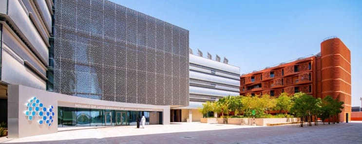
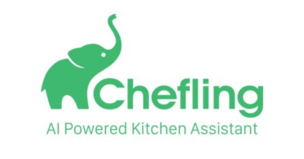
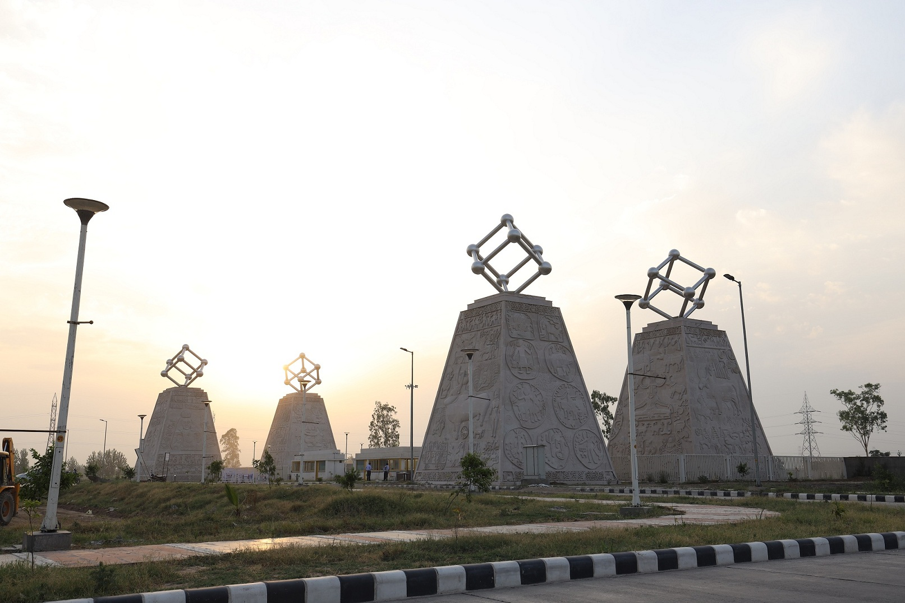
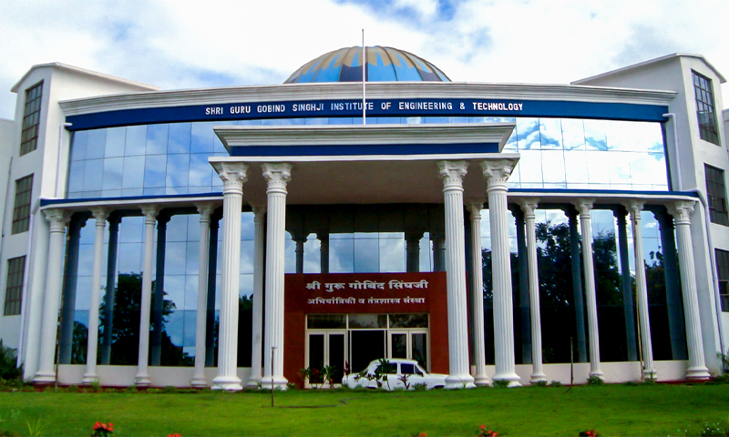

Experience & Education
June 2026 - September 2026
Research Scientist Intern
Adobe Research
August 2023 - Present
PhD Researcher
Mohamed bin Zayed University of Artificial Intelligence (MBZUAI)
Working on:
- Composed video retrieval
- Open-world video instance segmentation
- Multimodal reasoning
- Large-scale datasets (EvoLMM)

Nov 2021 - July 2023
Researcher
MBZUAI
Focused on Video Understanding and Segmentation. Proposed MSSTS for composed video retrieval.
Feb 2020 - May 2021
Machine Learning Engineer
Chefling India Pvt Ltd
- End-to-end ML systems for recipe understanding.
- Deployed to 1M+ users (Chefling App).
- 92% cost reduction in data tagging.

Jan 2019 - Feb 2021
Research Assistant
Indian Institute of Technology Ropar (IIT-Ropar)
- Real-time image & video restoration (hazy/foggy conditions).
- Super-resolution projects for commercial applications.

Jun 2015 - Jul 2019
B.Tech in Computer Science
SGGSIE&T, Nanded
Best Thesis Award. 1st Prize in Walking Robot Competition (Pragya).
